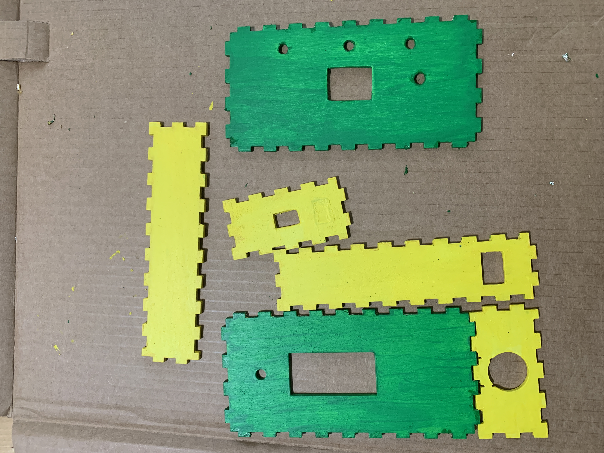

Codes
Artist Statement
Working on this project was an incredible experience. I was able to create an electronic device that I can use for working out.
That was my goal all along--to build a project that is relevant to me. I care about my health, and exercising regularly is a priority for me.
This device uses an accelerometer that responds to my reps, and it sends me words of encouragement each time I lift my workout equipment.
I was able to create different devices in this course that I'd never thought possible for me. This, however, is by far my favorite of them all.
Although it's not a real human being interacting with me, looking at the display as I do my reps made me feel like someone is encouraging me.
I am very interested in adding more features to this device and personalizing it more in the future.
Updates
